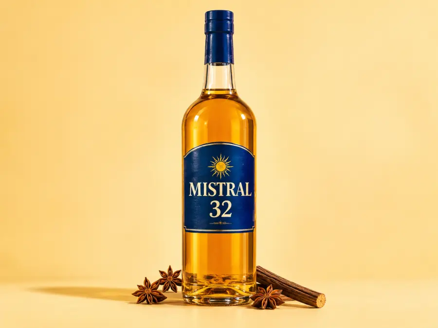

Donnez votre avis
Donnez votre avis

45 % vol.
Mistral 32 Original
La recette signature : anis étoilé, réglisse et herbes de Provence, pour un pastis franc et rafraîchissant.
Une même passion pour l’anis, trois caractères bien différents. Trouvez celui qui vous ressemble.

45 % vol.
La recette signature : anis étoilé, réglisse et herbes de Provence, pour un pastis franc et rafraîchissant.

40 % vol.
Une version pétillante de fraîcheur, relevée de zestes de citron de Menton issus de l’agriculture biologique.

45 % vol.
Vieilli six mois en fût de chêne, un pastis rond et boisé pour les amateurs de caractère.

L'ART DU SERVICE